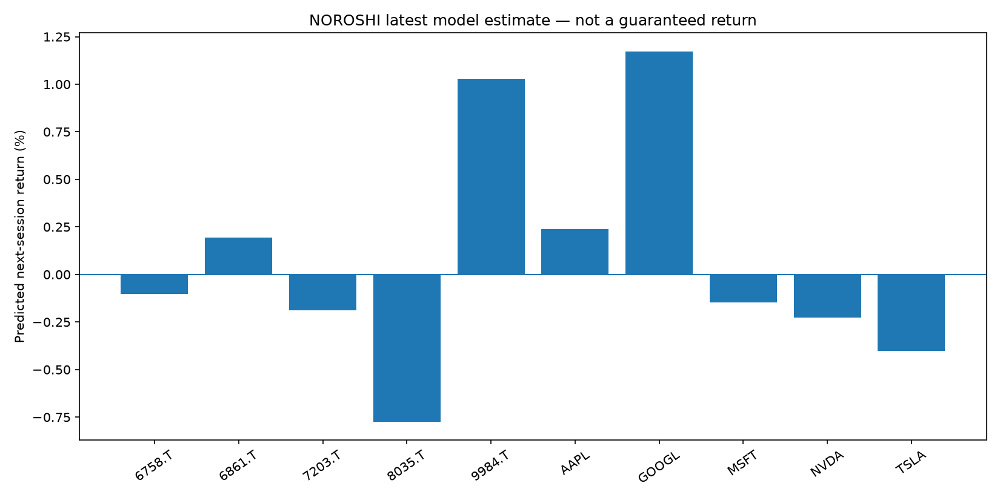
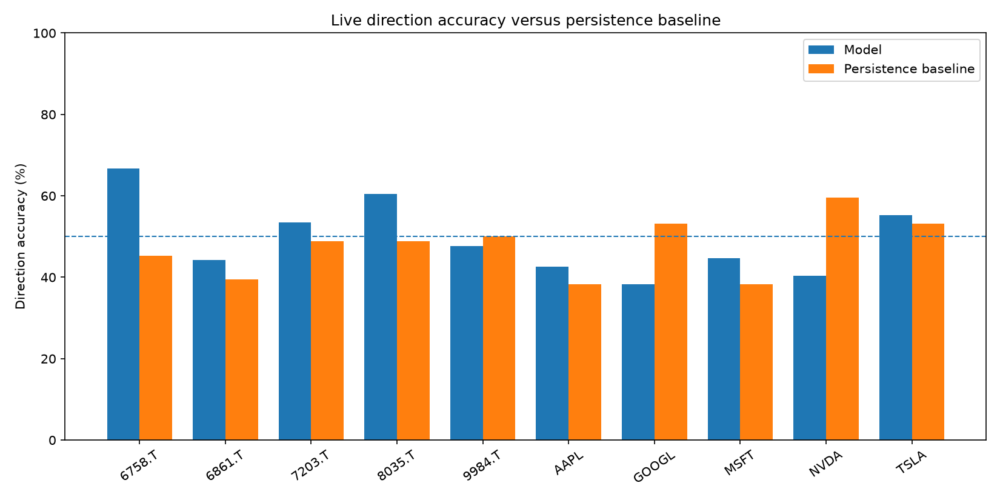

NOROSHI Auditable Forecast Dashboard
次営業日終値方向の研究用予測。売買の自動執行や利益保証は行いません。
システム状態
正常
生成日時 UTC
2026-11-10T16:59:49.717153Z
市場データ基準日
2026-11-09 / 2026-11-10
有効予測
10
Walk-forward方向精度
49.5%
baseline 49.6%直近90日Live方向精度
49.1%
448件 / baseline 47.5%状態と注意
- 現在、重大な警告はありません。
Confidenceは過去の的中率ではありません。 今回の判定に対するモデルのクラス確率です。実際の精度はWalk-forward検証と、保存後に確定したLive実績で別に測定します。
30件未満のLive評価は暫定値であり、対外的な精度主張には使いません。
最新予測
| 銘柄 | 基準日 | 終値 | 予測値 | 予測騰落 | 方向 | 上昇確率 | Confidence | 時系列検証 | 品質 | 研究Signal |
|---|---|---|---|---|---|---|---|---|---|---|
| 6758.T ソニーグループ | 2026-11-10 | ¥4,237 | ¥4,233 | -0.10% | 弱気 | 42.7% | 57.3% モデル確率 | 52.5% baseline 53.5% | CAUTION | HOLD |
| 6861.T キーエンス | 2026-11-10 | ¥75,200 | ¥75,346 | +0.19% | 強気 | 53.9% | 53.9% モデル確率 | 54.0% baseline 48.0% | PASS | HOLD |
| 7203.T トヨタ自動車 | 2026-11-10 | ¥3,414 | ¥3,408 | -0.19% | 弱気 | 46.0% | 54.0% モデル確率 | 44.5% baseline 53.0% | CAUTION | HOLD |
| 8035.T 東京エレクトロン | 2026-11-10 | ¥9,006 | ¥8,936 | -0.77% | 弱気 | 36.2% | 63.8% モデル確率 | 48.5% baseline 46.0% | CAUTION | HOLD |
| 9984.T ソフトバンクグループ | 2026-11-10 | ¥3,872 | ¥3,912 | +1.03% | 強気 | 56.9% | 56.9% モデル確率 | 47.0% baseline 49.5% | CAUTION | HOLD |
| AAPL Apple | 2026-11-09 | $350.69 | $351.53 | +0.24% | 強気 | 54.6% | 54.6% モデル確率 | 53.5% baseline 43.5% | PASS | HOLD |
| GOOGL Alphabet | 2026-11-09 | $288.15 | $291.53 | +1.17% | 強気 | 73.2% | 73.2% モデル確率 | 48.5% baseline 48.5% | CAUTION | HOLD |
| MSFT Microsoft | 2026-11-09 | $545.18 | $544.38 | -0.15% | 弱気 | 46.2% | 53.8% モデル確率 | 47.0% baseline 50.0% | CAUTION | HOLD |
| NVDA NVIDIA | 2026-11-09 | $178.67 | $178.27 | -0.23% | 弱気 | 43.7% | 56.3% モデル確率 | 47.5% baseline 53.5% | CAUTION | HOLD |
| TSLA Tesla | 2026-11-09 | $378.05 | $376.54 | -0.40% | 弱気 | 41.7% | 58.3% モデル確率 | 52.5% baseline 50.5% | PASS | HOLD |
予測チャート

精度とbaseline

Live実績（銘柄別）
| 銘柄 | 確定件数 | 方向精度 | baseline | 差 | Return MAE |
|---|---|---|---|---|---|
| 6758.T | 42 | 66.7% | 45.2% | +21.4pt | 1.29% |
| 6861.T | 43 | 44.2% | 39.5% | +4.7pt | 1.46% |
| 7203.T | 43 | 53.5% | 48.8% | +4.7pt | 1.51% |
| 8035.T | 43 | 60.5% | 48.8% | +11.6pt | 5.06% |
| 9984.T | 42 | 47.6% | 50.0% | -2.4pt | 4.83% |
| AAPL | 47 | 42.6% | 38.3% | +4.3pt | 1.17% |
| GOOGL | 47 | 38.3% | 53.2% | -14.9pt | 1.56% |
| MSFT | 47 | 44.7% | 38.3% | +6.4pt | 1.43% |
| NVDA | 47 | 40.4% | 59.6% | -19.1pt | 1.80% |
| TSLA | 47 | 55.3% | 53.2% | +2.1pt | 2.15% |
データ鮮度
| Ticker | 市場 | 最終日 | 取得元 | 状態 | 経過日 | エラー |
|---|---|---|---|---|---|---|
| AAPL | US | 2026-11-09 | download | fresh | 1 | |
| GOOGL | US | 2026-11-09 | download | fresh | 1 | |
| MSFT | US | 2026-11-09 | download | fresh | 1 | |
| NVDA | US | 2026-11-09 | download | fresh | 1 | |
| TSLA | US | 2026-11-09 | download | fresh | 1 | |
| 7203.T | JP | 2026-11-10 | download | fresh | 1 | |
| 6758.T | JP | 2026-11-10 | download | fresh | 1 | |
| 9984.T | JP | 2026-11-10 | download | fresh | 1 | |
| 6861.T | JP | 2026-11-10 | download | fresh | 1 | |
| 8035.T | JP | 2026-11-10 | download | fresh | 1 |
評価方法
毎回、最新OHLCVを取得し、未完了セッションを除外してからLightGBM分類器・回帰器を再学習します。モデル内部評価には、未来データを訓練側へ混ぜないexpanding TimeSeriesSplitと1期間のgapを使います。
実運用評価は、変更不能なschema-v2予測を次の完成した市場セッションの終値と後日照合します。2025年11月で停止していた旧キャッシュ由来の予測は集計しません。
機械可読データ: latest_predictions.json / metrics.json / status.json / live_results.json